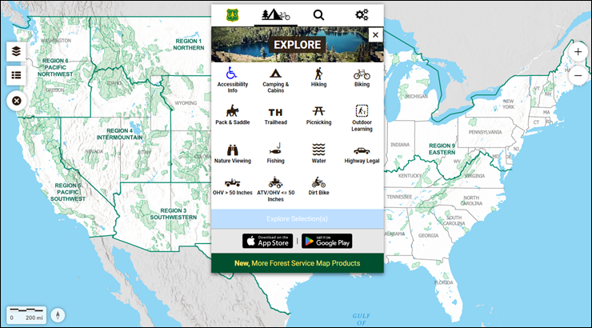
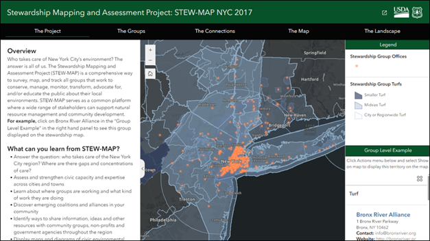
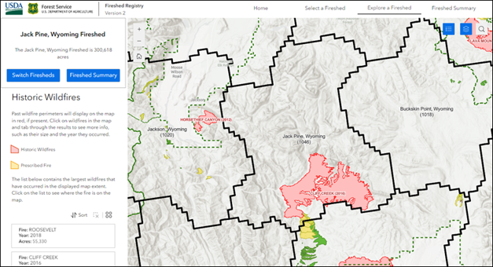
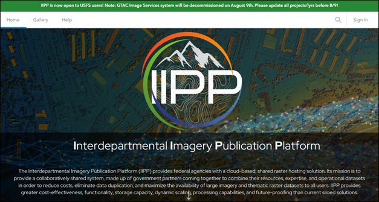
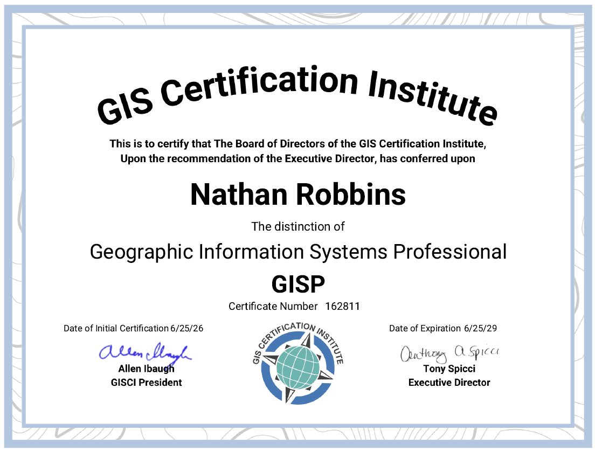

Helping organizations modernize geospatial systems through ArcGIS Enterprise, cloud infrastructure, automation, enterprise architecture, and scalable data solutions.
View Projects View ResumeYears GIS Experience
Certified Professional
ArcGIS Administration
Cloud Geospatial Workflows
USFS & Multi-Agency Programs
Enterprise Solutions & Modernization

Reduced FME workflows from 37 to 10, reduced map services from 10 to 5, and lowered server load by 50%.

Developed enterprise workflows, public applications, and a 108-page implementation guide.

Suitability modeling and decision-support tools presented to Forest Service leadership.

Cloud-based imagery publishing supporting multi-agency modernization.

Geographic Information Systems Professional